生成时间：2026-10-16T11:50:41+08:00
今日保留论文数：15
内容构成：今日新文 15 篇；补充推荐 0 篇；经典旧文精读 0 篇
阅读分层：重点精读 3 篇；相关简报 12 篇。精读依据科学贡献筛选，简报保留方法、结论及局限。
数据源警告
- 本次有 1 个数据源访问异常；完整错误已保留在运行日志中，日报只显示摘要。
- 其他来源：1 个异常。
- 主要错误类型：其他 1 次。
高能天体物理重点
1. The impact of nonlinear Landau damping on cosmic ray streaming and the role of external turbulence
- 来源：arXiv / astro-ph.HE
- 链接：https://arxiv.org/abs/2610.20695
- 作者：Rouven Lemmerz, Mohamad Shalaby, Ellen Zweibel, Christoph Pfrommer, Timon Thomas
- 公告 / 来源日期：2026-10-16
- 阅读层级：重点精读
- 评分：novelty 8/10，importance 8/10，relevance 9/10，final 9.35/10
- 推荐理由：控制Landau闭合的流体PIC实验区分自生波和外部湍流，直接检验宇宙线输运常用饱和假设。
中文题目：非线性Landau阻尼何时能调节宇宙线流？关键在外部波，而不只在自生波
做了什么：宇宙线比Alfvén波传播得快时，会激发能散射自身的磁扰动；输运模型常把非线性Landau阻尼作为限制波增长的机制。作者用热电子、热离子流体加动力学宇宙线粒子的混合模拟，直接比较启用和关闭Landau闭合的结果。对本文单能宇宙线壳分布，只有自生波时两种计算几乎相同，宇宙线漂移趋向Alfvén速度；加入较大尺度的强外部波后，阻尼才明显改变波谱，并使正反向波接近均衡，漂移可降到背景流体速度附近。
另一条证据来自数值控制：宇宙线粒子采样过稀会制造虚假的俯仰角梯度和反向波，形成看似物理的陡谱与逆向能量转移。本文因此同时检验“哪种物理足以改变饱和”和“哪种数值误差会伪装成这种物理”，结论限于一维、特定热背景与单能注入条件。
为什么重要：波幅决定宇宙线的散射频率，进而影响它们在星际介质中停留、输送能量和作用于气体的方式。如果把阻尼率写进宏观输运方程却没有提供它需要的长波成分，就可能得到错误的漂移速度。本文最有力之处是物理开关实验：在同一数值设置下开关Landau闭合，直接寻找差异，而不是仅从最终谱斜率反推阻尼机制。它没有推翻所有非线性Landau阻尼模型，却指出使用这些模型前必须说明外部谱和粒子分布。
理论 / 观测 / 仪器方法价值：可复用的方法是同时跟踪传播方向、极化、共振范围和粒子俯仰角分布。单看总磁功率无法分辨正反向波，而它们对漂移的作用恰好不同；低粒子数造成的假反向波也只有联合粒子分布才能识别。作者还用测得的波谱计算准线性稳态漂移，再与粒子直接测量比较，使“有了这种波谱就应有这种输运”成为可检验关系。这个流程比只调一个有效扩散系数更接近物理闭合。
为什么应该关注：对TeV晕、源周宇宙线滞留和伽马射线形态解释，背景湍流不能只当作无关噪声：它可能改变散射中心的运动，甚至使漂移低于Alfvén速度。但本文没有拟合实际晕，也没有给出可直接套用的三维扩散系数。值得跟进的是把真实宽能谱宇宙线、可观测环境参数与多维湍流加入控制实验，检查不同能量是否由不同来源的长波调节。
展开详细解读：文章讲解、背景、理论、重点章节、图表与相关工作
文章详细讲解
科学问题：流不稳定性可以把宇宙线的定向自由能转成Alfvén波，随后波散射宇宙线，使流速下降。常用叙述把增长与阻尼平衡当作自然终态，但非线性Landau阻尼涉及不同波的拍频与热粒子相互作用，并不是任意单个波都能独自以同样方式耗散。真正需要回答的是，自生谱内部是否具备足够的耦合伙伴，以及外部波存在时会怎样改变终态。
作者怎么做：热背景采用带可开关Landau闭合的流体描述，宇宙线用粒子推进。基准宇宙线在动量大小上是单能球壳，初始漂移为Alfvén速度的五倍。作者比较基准、低粒子数和额外长波三类配置中的闭合开关，同时改变盒长，记录波谱、正反传播成分、宇宙线平均漂移及能量。这样，物理阻尼的效果必须表现为其他设置相同的两次运行之间的差别。
关键结果：基准闭合开关几乎不改变饱和，最强共振尺度附近又缺少更长的自生共振波，因此简单的全谱阻尼平衡不成立。加入预先播种的强长波后，Landau闭合削弱增长并促进正反向散射的均衡，最终漂移可接近零。反过来，降低粒子采样也能产生反向波，但这时关闭Landau闭合仍会出现异常，说明类似表观结果可以来自数值问题。
局限和下一步：这里的“外部湍流”是有限组预置Alfvén模式，不是自洽三维湍流级联。一维模型无法检验依赖各向异性湍流的其他阻尼机制；单能球壳也缺少更高能粒子可激发的长波。热背景闭合在本文等离子体压强与磁压相当的范围更适用，高热压情景会低估动力学阻尼。下一步应分别扩展粒子谱、空间维度和背景动力学，并延续粒子数及盒长收敛检查，不能把当前否定结果推广成任何环境中该阻尼都无效。
关键结果是怎么做出来的
首先读模拟条件。本文取Alfvén速度为光速的0.01倍，宇宙线壳的四速度为光速，粒子普通速度约0.7倍光速；初始漂移只占这一随机速度的小部分。宇宙线数密度相对背景离子为五万分之二十五，即0.0005，热离子与电子的beta均为1，质量比为25。这样的设置便于分离流驱动波，却不是实际星际质子电子质量比的直接复制。
其次比较同条件的基准运行。约每离子惯性长度4080个宇宙线粒子的计算中，开关闭合后漂移、正反向波幅和非共振长波随时间的曲线基本一致。图2比单张晚期谱更有说明力：它显示演化全过程未出现预期的阻尼差异。因此本组实验中，接近Alfvén速度的终态主要是流的各向异性耗尽，而非非线性Landau阻尼在所有尺度上顶住增长。
理论解释依赖极化与波尺度。线性极化的共同传播波可以看成不同旋向成分，其非线性相互作用对长波增长的贡献会抵消。有效阻尼率又依赖目标波以下波数处的累积功率。单能粒子不能共振激发任意长的波，于是最长共振尺度没有足够自生长波来阻尼它；对不同波数同时套用同一增长—阻尼平衡会丢失这个边界。
降低粒子数至每惯性长度204个后，俯仰角分布出现未解析的局部负梯度，尤其在接近平行或反平行运动处。这些梯度驱动了本不应由原始平滑流分布激发的反向波。附录B将粒子分布与共振波数对应起来；异常陡谱、低漂移乃至额外能量损失在无Landau闭合时也存在，是识别数值伪影的重要反证。这个诊断不能脱离边界条件去否定所有既有混合模拟。
加入较大尺度预置波后，闭合开关才产生可分辨差异。相互作用伙伴不再受单能自生谱的最低波数限制，阻尼开始调节共振波，并伴随反向成分增加。图7进一步用当前波谱预测稳态漂移：当粒子分布接近所假定的平滑稳态时，预测与直接测量相符；低采样非平衡阶段则会失败。因此波谱诊断有适用前提，不能把任意时刻代入稳态式都视为验证。
展开背景、理论、公式、模型和章节导读
背景知识
宇宙线虽是高能带电粒子，在星际空间通常不是沿一条直线自由逃逸。磁场扰动改变它们速度方向，使大量粒子在统计意义上扩散。这里的俯仰角是速度与平均磁场的夹角，它的余弦决定粒子沿磁场前进有多快；散射改变这一角度，并不必在每次相互作用中显著改变粒子总能量。
Alfvén波是磁张力与等离子体惯性共同形成的横向波动，其速度由磁场强度和质量密度决定。宇宙线流相对背景过快时，可以与某些波长满足回旋共振并把定向能量交给波。若只存在同向传播的散射中心，粒子在该波参考系中趋于各向同性，回到背景系便留下约Alfvén速度的漂移；这与粒子全部静止是不同概念。
非线性Landau阻尼的“非线性”在于先由波与波形成包络或拍频，再由热背景粒子与该扰动发生能量交换。能否共振取决于拍频相速和热速度分布。它不同于简单加入一个常数摩擦项，也不同于宇宙线直接驱动波的线性回旋不稳定性。对哪些波、哪些极化、哪些传播方向进行平均，会影响得到的有效阻尼率。
宏观宇宙线反馈模型需要知道散射中心如何运动，而不只是磁扰动有多强。只有正向波与正反向波均衡的环境可以具有相似总功率，却产生不同平均漂移。本文之所以能推进，是混合方法保留了宇宙线动力学，又允许把热粒子Landau响应作为独立开关。代价是背景不是完整动力学粒子，因此必须把闭合有效范围与数值粒子噪声一起审查。
基础理论 / 方法脉络
理论主线从共振条件开始：粒子沿场速度与波相速的差，决定它在自己的运动中感受到怎样的波频率；当此频率匹配回旋频率，微小扰动可持续改变俯仰角。单能粒子的最大回旋半径限制了能由该群体共振激发的最长尺度，这正是“自生谱不包含所有长波”的根源。
传播方向需用Elsasser变量分辨。它们把流体横向速度与按密度换算的磁扰动相加、相减，分别选择两种传播特征。本文约定负号分量对应正向波、正号对应反向波；波数正负在所用复表示里还携带旋向信息，不能把负波数简单读成反向传播。否则会把极化间相消与不同散射中心混为一谈。
阻尼率中的长波积分有清楚的物理含义：一个目标尺度能与已经存在的较长波相互作用，耦合强度由这些波的累积能量设定。增长率对波数的依赖与阻尼率不同，通常只能在某个尺度平衡。即使找到一个交点，也不能据此宣布整个谱已进入同样的平衡；最低共振波数处尤应单独检查。
准线性理论把随机弱波造成的角度变化近似为扩散。正反向波给出的散射率加起来控制各向同性化速度，差值则控制散射中心的净漂移。最强模式还可能出现粒子回旋相位聚束和非线性俘获，使弱随机相位假设失效；附录C正是为这个局部例外提供说明。谱预测成功主要说明终态统计关系相容，不意味着所有瞬态都由准线性理论完整描述。
公式与推导
以下按“波速—共振—增长—阻尼—输运”连接原文公式；第一式为标准背景关系，第二式的Elsasser定义用于解释原文图，后续对应正文式1、4、6–7、9和14。统一以正的增长率和负的阻尼率记号书写，避免原文平衡式附近的符号歧义。
背景磁场为 $B_0$，热背景质量密度为 $\rho$，SI制下Alfvén速度为
磁扰动除以同一个因子便具有速度单位，因此可构造
这一步把总磁功率拆成传播方向；在本文约定中正向散射率来自 $z^-$，不是从波数符号直接判断。
令 $\mu$ 为俯仰角余弦，$\Omega_{\rm cr}$ 为宇宙线相对论回旋频率，则原文共振条件为
对本文壳分布，$u_0=\gamma v$，忽略相对很小的波速得到最低共振波数
这里 $\Omega_i$ 是相应非相对论离子回旋频率；该近似只用于理解谱边界，不删除数值计算中的波动力学。
对正向流驱动分支，原文增长率可写为
阶跃函数给出共振范围，括号在漂移降到波速时消失；因此无显著外部阻尼也可能因自由能消耗而停止增长。
将共向波的谱能量密度记为 $\epsilon^{\rm co}(k)$，原文的阻尼近似是
积分是无量纲相对磁功率，$F$ 描述热背景响应；整式量纲为逆时间。若最长共振尺度以下没有波，积分很小，不能假定该尺度已被强阻尼。稳态幅度平衡要求 $\Gamma_{\rm str}+\Gamma_{\rm NLLD}=0$，只在可满足这个条件的尺度使用。
在弱波准线性近似下，谱功率与散射频率的联系为
因此必须保留正反向谱分别求 $\nu^F,\nu^B$。对本文采用的近似平滑角分布，稳态漂移最终为
尖括号为原文的角分布平均。若只存在正向散射，角权重平均给出约 $v_A$；若两方向散射率相等，净漂移趋零。这条极限检验解释图7，但非平衡尖锐梯度、强模俘获或散射率近零处须回到更完整的动力学处理。
模型拟合 / 应用方法
本文没有对某个伽马射线源或银河宇宙线数据进行参数拟合。输入是指定背景密度、磁场、热压、单能粒子分布、初始漂移和数值网格；输出是粒子及波的演化。所谓验证首先应看成控制实验，不能把模拟曲线之间的接近写成观测支持度或统计显著性。
最关键的参数对照是Landau闭合开关。两组共享网格和注入分布，差异才可归给闭合所加入的背景响应。外部模式的波长、幅度和传播方向另外指定，故该组检验的是“存在这些外部波时”的响应。它不是通过拟合某个湍流谱找到最佳外部环境，也没有遍历所有可能外部谱。
数值稳健性包括改变每单位长度的粒子数和扩大盒长。粒子数从4080降到204后产生额外梯度与反向波，说明必须检查相空间是否充分采样，而不只检查网格能解析最短波。大盒允许更多长尺度，但对单能分布仍不会凭空产生更大回旋半径的粒子；物理共振边界与有限盒尺度需分开解释。
对准线性预测，作者从Elsasser谱平滑取样并映射到俯仰角，以当前波的正反散射率估计漂移，再与直接的粒子平均值比较。这里没有用拟合参数强行贴合漂移曲线。基准及有外部波的近稳态符合得较好，低采样非平衡时不符合；残差因此揭示近似条件，而不是一个可以无条件消去的误差项。热粒子俘获、真实质量比和高beta闭合偏差仍未由这些数值对照解决。
重点章节 / 结果段落怎么读
第II节先抓住共振和波极化：确认最低共振波数如何由单能壳决定，再看为什么线性极化共同传播波不自动提供有效逆级联。这一步决定后面哪些谱形真的需要外部波。
第III节与图2对照阅读：先比相同采样下的闭合开关，再看外部波，最后看低粒子数。不要把三种改动混在一起归因于阻尼。
第IV节和图7追踪从谱到漂移的映射：区分当前波谱的稳态预测与粒子实际仍在演化的状态，关注何时二者才应相等。
附录B、C分别检查数值梯度和最强模式的非线性俘获；第V节再看宽能谱、多维环境及热背景闭合的边界。这些限制决定本文能否迁移到真实TeV晕。
关键图表与解读
图2
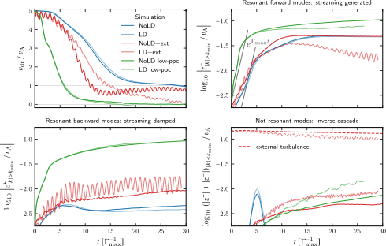
图注：各模拟宏观量随时间的演化比较。左上：宇宙线漂移速度，趋向Alfvén速度 $v_A$ 或背景速度0；右上：回旋共振的 $z^-$，衡量由流激发的正向Alfvén波强度；左下：回旋共振的 $z^+$，衡量流不稳定性本身不能激发的反向波；右下：尺度大于最大回旋半径、因而不与任何宇宙线共振的Alfvén波强度。本图用 $|z|_{|k|>k_{\min}}^\pm$ 简记在正负两侧从最低共振波数起对 $|z_k^\pm|$ 求和。仅在带外部波的模拟中，虚线单独显示人为播种波的幅度；此时上述共振求和不包含外部波数 $k_{\rm ext}$。
怎么看这张图：先比较基准开关，再比较外加波的差异；低采样曲线是数值控制，不是另一种真实环境。 支持该篇实际核查的核心证据；已与原HTML图号和完整原文图注核对。
来源与置信度：arXiv HTML；source verified；https://arxiv.org/html/2610.20695v1/BS_zpanels.svg
图7
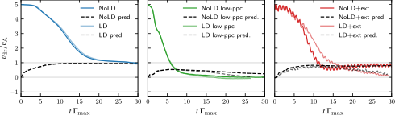
图注：模拟测得的漂移速度随时间演化（实线），与原文式14给出的准线性稳态预测（虚线）比较。
怎么看这张图：当前谱的稳态预测只在对应粒子分布接近稳态时应与实测相等。 支持该篇实际核查的核心证据；已与原HTML图号和完整原文图注核对。
来源与置信度：arXiv HTML；source verified；https://arxiv.org/html/2610.20695v1/drift_skilling.svg
强相关工作
原文引用的Bai等2019年MHD粒子混合研究建立了流不稳定性的线性增长和准线性演化背景。本文沿用“粒子驱动波、波再散射粒子”的问题，但增加热背景Landau闭合的开关比较，并把俯仰角分布采样作为独立诊断。两者边界条件和物理实现不同，不能仅凭本文的低采样反例就判定前作结论错误。
Lee与Völk 1973年的波—粒子非线性阻尼以及Völk与Cesarsky 1982年的高beta讨论，提供了阻尼依赖波谱和热背景的理论脉络。本文关心的是这些机制在有限自生谱中是否真正发挥作用；高beta理论也提示当前闭合并非全参数适用。后续比较应统一极化、传播方向、背景beta和粒子能谱，而不能只比较一条功率谱的斜率。
同一事件 / 同类源线索：
（未提供）
相似工作：
基础理论 / 方法工作：
相反观点 / 张力线索：
（未提供）
2. Are $E>B$ regions essential for particle injection in relativistic magnetic reconnection?
- 来源：arXiv / astro-ph.HE
- 链接：https://arxiv.org/abs/2610.22118
- 作者：Omar French, Fan Guo, Xiaocan Li, Qile Zhang, Yi-Hsin Liu, William Daughton, Hui Li
- 公告 / 来源日期：2026-10-16
- 阅读层级：重点精读
- 评分：novelty 8/10，importance 8/10，relevance 9/10，final 9.35/10
- 推荐理由：逐粒子注入前做功分解检验E大于B区必要性，二维无导场非辐射对等离子体边界明确。
中文题目：磁重联的粒子注入是否必须经过电场占优区？逐轨迹做功给出更细的答案
做了什么：相对论磁重联能够产生非热粒子，但粒子最初如何从热背景跨入高能群体仍有争论。作者在二维、无显著导场、非辐射的电子—正电子等离子体模拟中，跟踪粒子第一次达到注入阈值之前的电场做功，并按电场占优区内部、离开该区后的再磁化阶段，以及其余时间分成三类。这样可以区分“曾经到过某区域”与“主要能量确实在那里获得”。
按每粒子做功最大的一类归属，磁化通道在磁化参数12时占注入粒子的93%，在800时仍占63%（表2）；许多粒子注入前从未进入电场占优区。因而该区域并非每个粒子注入的必要通道。不过，事后只选最高能尾部会显著增加曾由非磁化通道主导的粒子比例，而且这种关联随模拟盒大小而变，不能把总体注入结论等同于极高能粒子结论。
为什么重要：对喷流、脉冲星风和耀发的辐射建模，注入效率决定有多少粒子可进入后续加速。过去把最终高能粒子是否经过X点作为证据时，可能同时混入早期注入优势和注入后的额外增能。本文用首次越阈前的做功账本明确分离这些阶段，弱化了“进入电场占优区就是必要因果路径”的解释。其贡献是更严格地界定证据所回答的问题，并非否认X点或非理想电场在重联中的整体作用。
理论 / 观测 / 仪器方法价值：值得复用的是按轨迹积分做功、采用互斥时间区间、同时报告粒子比例与通道份额，并改变再磁化窗口、最终能量切选和盒长。仅记录粒子是否越过某个空间掩膜会把短暂接触与真正主要增能混在一起；本研究还把注入后的高能选择单独列出，展示同一批轨迹在不同问题下可以产生不同答案。这个分析结构可用于其他粒子模拟，但通道的物理定义须重新验证。
为什么应该关注：高能辐射由少数最高能粒子承担时，数量上占优的注入通道未必占据光度预算。对IACT所关心的非热尾部，既要问谁提供了大多数注入粒子，也要问谁更容易进入辐射最高能端。本文显示两个问题的答案可能不同。进一步需要三维、电子—离子成分、有限导场及强冷却计算，把轨迹诊断与实际辐射权重连接起来；不能从当前二维非辐射结果直接决定某个源的辐射机制。
展开详细解读：文章讲解、背景、理论、重点章节、图表与相关工作
文章详细讲解
科学问题：重联层中电场强于磁场的局部区域会使粒子暂时不再按通常的磁力线回旋，因而常被认为是进入非热尾部的入口。但粒子在其他区域也能从电场获得净能量，而穿越电场占优区并不保证主要能量在那里获得。需要检验的是对每个注入粒子，哪个时间段贡献了最大的注入前做功，而不是只绘制最后高能粒子的轨迹。
作者怎么做：用全动力学PIC模拟推进电子与正电子，扫描磁化参数与盒长，并记录大量示踪粒子的逐步场和速度。注入时间定义为洛伦兹因子第一次超过磁化参数四分之一。积分在该时间停止，再把每一步按区域和离区后的回旋相位分到非磁化、再磁化或磁化通道。作者并列使用“最大贡献归属”与“单一通道贡献超过99%”的严格纯通道定义。
关键结果：绝大多数注入粒子的主要做功来自磁化通道，且相当多从未在注入前接触电场占优区。磁化程度越高，非磁化通道占比上升，却仍未在整个注入群体中占多数。若随后只保留一个穿越时间后的高能粒子，非磁化通道的关联增强；这说明它可能更有效地把一部分粒子送入高能尾部，与“不是所有粒子的必要入口”可以同时成立。
局限和下一步：磁化标签是剩余时间区间的操作定义，不能自动证明其中运动绝热，也不能证明所见做功全部来自理想电场。二维拓扑、极小导场、对等离子体和无辐射损失都限制外推。高能关联随盒长仍在改变，不能称为大系统极限已收敛。未来应在保持时间分区与能量核对的同时增加维度和辐射，并比较数目、能量及辐射三种加权结果。
关键结果是怎么做出来的
模拟首先固定了可比较的物理尺度。磁化参数依次为12、50、200、800，主比较采用长度1600个电子惯性长度的盒子；另在磁化参数50时扫描200到6400的盒长。电子与正电子温度均为0.36倍电子静能，每格有100对粒子，约64万个示踪电子被逐时间步记录。极弱导场参数为十万分之一，故结论确实针对近反平行重联。
样本并不是任意时刻的所有高能粒子。作者先排除重联开始前已满足阈值的群体，再纳入从开始到一个盒穿越时间之间首次注入的粒子；不同磁化参数的注入比例本身从约29%降到6.6%。因此表2里的通道份额是条件于“已注入”的比例，而不是整个热等离子体的百分比，更不是每个通道提供的总能量百分比。
通道划分避免把X点刚离开后的迟延增能全部归给普通磁化阶段。离开电场占优区后，作者累计局部回旋相位，到一周、重新进入该区或达到注入阈值三者中的最早时刻结束再磁化阶段。多次进出会产生多段积分。改变回旋相位阈值后，该通道的数值份额会变，但主要磁化通道仍然最大，说明总体结论不是只靠一个边界选择。
图4和表2给出最直接的计数证据。按最大贡献分类，磁化通道在四个磁化参数下约占93%、70%、65%、63%；完全未接触电场占优区的比例约为90%、50%、39%、43%。纯通道要求更苛刻，三类相加不足100%，未被分配的粒子确实由多通道共同增能。把纯通道遗漏的部分重新归给某一类会破坏作者定义。
高能尾部要另看图5–6。最终能量越高，非磁化来源比例越显著，较高磁化参数下可达数成；严格高能切选还会改变总体图景。按注入时刻分组后，非磁化来源粒子仍更容易达到高能阈值，说明不只是它们更早开始加速。然而，在更大盒子中该关联减弱，且误差条只涵盖有限示踪粒子的计数误差。两条结果共同要求我们将“总体多数”和“尾部偏好”分开保留。
展开背景、理论、公式、模型和章节导读
背景知识
磁重联发生在不同方向磁场重新连接的区域，磁能可转成流体运动、热和非热粒子能量。磁场本身通过洛伦兹力改变粒子方向，而直接改变粒子能量的是电场沿速度方向的做功。因而判断加速机制时必须跟踪电场做功；磁力线图或粒子曾经到达的位置只是辅助信息。
在以高斯制表示的相对论等离子体里，电场强于磁场意味着局部存在电场占优的电磁结构。无导场X点附近磁场减弱，粒子可能暂时失去通常的回旋约束。不过电场占优区只是非理想区域的一种诊断，不等价于所有偏离理想磁流体条件的时空点，也不是重联能量转换的全部空间。
“注入”与“持续加速”是两个阶段。前者是粒子跨过预先定义的能量门槛，后者是在此后继续成为非热尾部。两个阶段可能由不同过程控制；最终挑出能量最高者，会偏向后续增能更有效或更早注入的轨迹。因此用最终样本逆推最初入口时，容易产生选择偏差。
对等离子体中的电子与正电子质量相同，可以较干净地研究相对论重联，但没有离子—电子质量差引入的额外尺度。二维体系又使粒子轨迹与磁岛拓扑受到限制。它适合设计清楚的对照，却不自动等于真实三维喷流。本文的可迁移成果首先是做功诊断方法，具体百分比仍要随物理设置重新测量。
基础理论 / 方法脉络
磁化参数衡量上游磁能相对粒子静质量能的大小。本文总数密度包含电子和正电子，若把它误读成单一物种密度，会产生因子二的定义差异。注入阈值与这个参数成正比，使不同模拟有一致的比较口径；但这一阈值仍是研究者的操作定义，改变它或改用动能阈值会改变选出的群体。
做功分解以每条轨迹为单位，三个通道覆盖从初始到首次注入的全部时间且不重叠。积分允许局部负做功，所以一个通道的归一化份额可能小于零，另一通道也可能大于一。三个份额和为一来自划分定义；它不是独立证明数值推进守恒的检验，仍需比较积分总做功与粒子能量变化。
最大贡献规则给每个粒子唯一标签，却把49%与51%这样接近的分解也分到不同类别；纯通道规则回答更严格的问题，只给几乎全部能量来自一类的粒子标签。两者合用能区分主导与独占。再磁化窗口则按累计局部回旋相位而非固定时间设置，避免在不同磁场强度下给出不同物理长度的窗口。
最高能尾部的条件概率与注入总数份额不同。某通道只占少数注入粒子，也可能以更高概率进入尾部；这与另一个通道提供大多数普通注入粒子不矛盾。进一步比较辐射还需将每个粒子的能量、俯仰角和局部场加权，本文无辐射设置并未完成这一步，因此不能用注入计数直接判断光子谱的主导通道。
公式与推导
下面前五步对应论文的磁化参数、阈值与式1–4，最后两步把论文分类规则写成教学用统计表达式。采用高斯单位制，电场和磁场可直接比较；$n_0=n_e+n_{e^+}$ 是总数密度。
先定义可供转换的磁能尺度及首次注入时刻：
阈值用的是总洛伦兹因子 $\gamma$，不是动能 $\gamma-1$。对给定粒子，直接能量变化来自
右侧单位是能量；这一等式用于核对轨迹积分。令 $\chi_i(t)$ 在 $E>B$ 时为1、其余为0，可得到第一类归一化做功
离区后至回旋相位达到指定值、重入或注入的最早时刻，构成第 $k$ 个再磁化区间。将所有区间相加：
其余非占优区时间的贡献必须扣除这些区间，避免重复记账：
故三份额相加为一。这个代数恒等式不能排除所有积分误差，也不要求每个份额都在零与一之间，因为局部减速可产生负贡献。
下面是对论文两种计数规则的教学表达。$N_{\rm inj}$ 为已注入示踪粒子数，$\boldsymbol1$ 为指示函数：
前者通常给每粒子一个最大贡献标签；后者留下混合增能粒子，因而纯通道份额总和可以小于一。两者都是粒子数比例，不能替代能量加权预算。
最后，若把样本再限制在最终动能 $\varepsilon=\gamma-1$ 超过 $\varepsilon_T$，所比较的量变成
它一般不等于 $f_X^{\rm max}$。这一步解释了为什么非磁化通道在注入总体中占少数，却能在最高能尾部显著富集；必须同时检查注入时间和盒长，才能判断富集的来源及稳健性。
模型拟合 / 应用方法
本文不是对天文数据做似然拟合，也没有给观测源的磁化参数后验。参数扫描控制磁化程度、盒长和时间窗口，主要输出是各通道的示踪粒子计数与做功份额。比较时应固定注入阈值定义、重联开始时刻和观察时间，否则差异可能只来自样本构成。
重联起始前已有的高能粒子被排除，以防初始电流片群体影响注入诊断。作者也检查剔除初始片内粒子的变化，典型通道占比只改数个百分点。这个检查降低了初始条件污染的担忧，但不能替代对其他初始平衡、驱动方式或开放边界的系统探索。
再磁化窗口从较小到较大的累计回旋相位改变后，份额有所变化，磁化通道仍保持最大。短暂进入电场占优区的事件也影响“是否曾接触”的比例，例如要求连续多个时间步才算接触会改变计数。因此接触率与做功率应并报，不能选用对某结论最有利的接触定义而忽略能量账本。
最终能量切选与盒长检查构成最重要的系统误差分析。图6的误差条只由有限示踪粒子数给出，一个标准差不能覆盖阈值选择、空间维度或盒尺度偏差。更大盒中非磁化来源的高能关联下降，说明有限盒结果还不是稳定的无限系统比例。作者用相近注入时刻分组仍看到后续增能差异，但尚未识别这种差异的全部动力学原因，不能把相关性提升成唯一机制证明。
重点章节 / 结果段落怎么读
第2节先读做功积分和再磁化区间定义。理解为何总份额为一、为何仍可有负份额，随后才有条件解读通道比例。
第3节核对物理设置：对等离子体、二维、极弱导场、无辐射，以及盒长和磁化参数扫描。它决定标题中的“必要性”结论在哪个范围成立。
第4.2节、表2和图4一起看，区分最大贡献、纯通道和从未接触占优区三个口径；尤其不要把摘要近似百分比替换成严格相同定义的精确数值。
第4.3节与图5–6查看最终能量筛选和盒长变化，再读第5节与既有文献的比较。这样可以看到争论有多少来自研究对象与统计口径不同，而不是某套轨迹本身相互矛盾。
关键图表与解读
图4
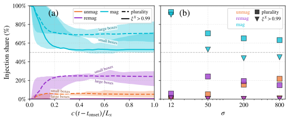
图注：非磁化（橙）、再磁化（紫）和磁化（青）能量通道的注入份额。(a) 在 $\sigma=50$、$L_x/d_e=1600$ 时，显示从重联开始计的累积份额；虚线采用最大贡献归属，实线采用 $\xi_i^X>99\%$ 的纯通道归属。阴影给出 $\sigma=50$、盒长为200、400、800、1600、3200、6400个惯性长度时的最小与最大份额，每类通道和归属规则各有一带。另两类的纯通道带接近零，因此只有磁化通道显示两条明显分开的带；边缘标注由小盒（不超过800）或大盒（至少3200）构成。(b) 显示重联开始一个光穿越时间后的份额，方块为最大贡献归属，倒三角为纯通道归属。纯通道规则留下未归类粒子，三类纯份额之和小于100%。
怎么看这张图：百分比按注入粒子数计；阴影表示盒长变化范围，不是置信区间。 支持该篇实际核查的核心证据；已与原HTML图号和完整原文图注核对。
来源与置信度：arXiv HTML；source verified；https://arxiv.org/html/2610.22118v1/shares.svg
图6
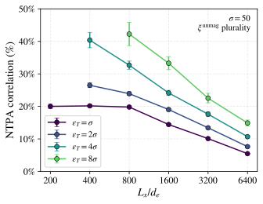
图注：在 $\sigma=50$ 下，非磁化来源粒子与非热加速（NTPA）的关联随盒长 $L_x/d_e$ 变化，最终能量阈值为 $\varepsilon_T=\sigma,2\sigma,4\sigma,8\sigma$。示踪粒子的筛选与图5相同：重联开始后注入、在开始后一个光穿越时间高于阈值，并按4.2节最大贡献规则归类。误差条是有限入选粒子数造成的一个标准差统计误差；少于100个入选粒子的点省略。最低阈值下最小三个盒子的关联近乎不变，而超过 $L_x/d_e=800$ 后每次盒长加倍都会使其下降。
怎么看这张图：先固定阈值比较盒长。有限计数误差小，不等于系统尺度误差已经收敛。 支持该篇实际核查的核心证据；已与原HTML图号和完整原文图注核对。
来源与置信度：arXiv HTML；source verified；https://arxiv.org/html/2610.22118v1/ntpa_boxsize_unmag.svg
强相关工作
原文引用Sironi 2022以及Gupta等2025对非理想或电场占优区域的注入作用进行讨论。本文没有简单否定这些区域与高能粒子的关联，而是将观察时间、注入阈值、做功积分终点及最终高能筛选明确分开。对照时应先统一这些口径；尤其不能把“最终尾部多曾经过”改写为“所有注入必须经过”。
French等2023的相对论重联注入工作和2026年的三维研究提供了相近的逐粒子问题背景；Drake等2006关于收缩磁岛中电子加速的研究则说明粒子可在更广泛的重联结构中获能。这些联系帮助理解为什么X点不是唯一候选位置，但当前磁化标签并未逐一证明具体的Fermi或漂移机制。要将计数通道进一步分解为物理加速机制，仍需沿轨迹检查局部场、曲率与绝热性。
同一事件 / 同类源线索：
（未提供）
相似工作：
基础理论 / 方法工作：
相反观点 / 张力线索：
3. JWST reveals a highly ionized nebula powered by an ultraluminous X-ray source with a massive black hole in the metal-poor galaxy Holmberg II
- 来源：arXiv / astro-ph.HE
- 链接：https://arxiv.org/abs/2610.20948
- 作者：F. A. Fogantini, P. Zeidler, L. M. Oskinova, T. Bao, W.-R. Hamann, P. Marchant, D.M.-A. Meyer, D. Pauli
- 公告 / 来源日期：2026-10-16
- 阅读层级：重点精读
- 评分：novelty 8/10，importance 8/10，relevance 8/10，final 9.00/10
- 推荐理由：HoII X1首次高电离Ne线的空间定位把ULX与百pc电离星云连接，激波与各向异性需全文核实。
中文题目：JWST分辨Ho II X-1高电离星云：硬辐射沿射电轴逃逸的空间证据
做了什么：Holmberg II是低金属丰度矮星系，其中超亮X射线源Ho II X-1周围早已发现电离星云和间歇射电喷出。新的JWST积分视场光谱首次在该源探测到高电离的[Ne V]与[Ne VI]，并将线辐射定位到十几至二十几秒差距尺度。最高电离成分主要在偏离X射线源、朝向射电结的位置，低电离线则铺展到更宽的星云区域，说明电离条件明显各向异性。
作者用MIRI和NIRSpec数据构建谱线图、拟合三个位置的混合光谱，并比较谱线宽度与仪器分辨率。窄线和形态排列支持ULX硬辐射沿优选方向照亮气体的解释，也可能与早先喷出打通的通道有关；目前没有通过完整光致电离和激波模型比较，唯一确定逃逸几何。标题中的大质量黑洞来自既有研究背景，本文不是新的黑洞动力学称重。
为什么重要：低金属丰度星系为什么出现恒星难以提供的硬电离光子，是理解高电离谱线的重要问题。把整座星系的高电离线与某个X射线点源并列，容易受源混叠和其他供能机制影响。本文在一个具体ULX周围同时看到离子能级、空间偏移和射电结构的联系，把证据推进到了源附近的空间尺度。但这证明的是该个例中ULX与高电离环境的紧密关系，不能自动推广成所有低金属丰度星系的高电离线均由ULX主导。
理论 / 观测 / 仪器方法价值：观测方法的价值在于把积分视场数据的每个像元谱线信息保留下来，再联合谱线形态与速度宽度。三位置点扩散函数拟合用于分离邻近成分，独立线面亮度图则提供较少依赖该分解的空间证据。作者还在蒙特卡洛中加入通量和天体测量扰动估计质心误差。对其他吸积源星云，这种“先验证空间分辨和背景，再谈机制”的顺序比单一线比值更稳健。
为什么应该关注：ULX把吸积供能、外流和星际介质联系在一起，可为高能源周围的反馈环境提供参照。这里距离源约20 pc的高电离气体记录的不是某次当前X射线状态，而是传播和气体响应综合后的历史辐照。值得关注的是射电喷出是否塑造了硬辐射通道，以及多离子图能否区分密度结构与真实辐射束射；这需要时序、密度和电离模型，本文没有提供中微子或TeV辐射的直接证据。
展开详细解读：文章讲解、背景、理论、重点章节、图表与相关工作
文章详细讲解
科学问题：普通大质量恒星可以电离氢，却较难解释强[Ne V]、[Ne VI]等需要更硬辐射的谱线。Ho II X-1既有很强X射线，又处于低金属丰度星系，并有已知He II星云与射电结，是检验吸积源是否实际照亮周围高电离气体的合适个例。关键不只在探测线，而在确认线的空间位置、扩展范围和运动学是否与该源有合理联系。
作者怎么做：2025年1月的MIRI中红外积分视场观测与2月的NIRSpec近红外观测提供从低到高电离势的多条线。作者校正光谱与天体测量，按射电中心XS及NE、SW三个位置作波长依赖的PSF分解，同时在连续谱扣除后的数据立方中积分谱线，形成线面亮度图。线型以高斯加局部线性连续谱描述，空间质心和张角则用统一阈值及模拟扰动计算。
关键结果：高电离的氖线集中在朝东北射电结偏移的位置，离子越难电离，发射通常越紧凑、方向越集中；相近PSF尺度的低高电离线比较表明差异不只是波长分辨率所致。代表性[Ne V]线宽接近仪器分辨率，未见强而宽的高速成分。这组证据支持来自ULX的各向异性光致电离，而不支持把大尺度高速激波作为唯一或显然主导的解释。
局限和下一步：观测没有专用背景场，也没有统一扣除扩展背景；三个PSF描述对部分分辨开的射电结只是近似。窄线不排除较慢或未分辨的激波，射电轴对齐也可能受气体密度分布影响。后续应在一致背景处理下联合密度敏感线比、各离子空间图和速度信息，比较光致电离与激波网格，并考虑历史X射线谱变化，才能约束硬辐射逃逸的几何和能量预算。
关键结果是怎么做出来的
先确认对象与尺度。作者采用距离3.4 Mpc，1角秒对应约16.5 pc；星系金属丰度约太阳的十分之一。Ho II X-1的历史X射线光度很高且变化显著，伴星性质及黑洞质量范围来自先前多波段工作。本文新信息是红外高电离谱线的分辨观测，而不是一次独立质量测量，也不是完整重建吸积率历史。
数据处理决定哪些比较可信。MIRI覆盖约4.9–27.9微米、分辨率随波长变化，NIRSpec覆盖约2.87–5.1微米。作者处理宇宙线、条纹和杂散光，并以成像和Gaia参照检查天体测量。没有背景扣除意味着局部连续谱拟合可以消去平滑基线，却不能自动消除同波长的扩展背景谱线；因此绝对通量或线比的解释比局部紧致形态更敏感。
相邻成分的光谱由三个PSF同时拟合得到，以减少XS、NE、SW之间串扰。PSF随波长变宽，例如在7.65、14.32和25.89微米处约为0.36、0.58和0.96角秒。射电结本身已有有限尺寸，所以短波处把它们当点源尤其是近似。作者另做逐像元线积分图，意味着主要空间结论并非完全由这三个固定位置强加出来。
表1和线图给出各向异性证据：[Ne V]14.32微米的电离势约97.1 eV，质心偏移1.16角秒、位置角约68度；[Ne VI]7.65微米对应约126.2 eV，偏移1.46角秒、位置角也约68度。两者投影尺度约19与24 pc。Brα和[Ar VI]波长较接近、PSF相似，但张角差别很大，有助于排除纯分辨率效应。误差来自通量和定位扰动，不能覆盖所有背景和形态模型偏差。
最后检查动力学与解释。代表性[Ne V]14.3微米分辨率约2770，对应约110 km/s的仪器FWHM，测得线宽与之相容。SW线翼有残差，作者指出可能来自条纹或杂散光，并未把它认定为喷流高速气体。窄线、高电离与射电轴方向综合支持硬光子优选逃逸，但尚无激波模型的统计排除。十几至二十几pc的投影距离还意味着数十年传播时间，不能与今天的X射线流量直接作瞬时因果配对。
展开背景、理论、公式、模型和章节导读
背景知识
超亮X射线源指位于星系核外、表观X射线光度非常高的吸积紧致天体。这个名称本身不唯一决定黑洞质量：中子星或恒星质量黑洞的超爱丁顿吸积、各向异性辐射都可能产生高表观光度。理解Ho II X-1时，应区分本文提供的星云证据和前人对紧致天体性质的推断，避免被标题中的质量描述带走。
电离势是从某个离子移走下一颗电子需要的能量；高电离态可以充当环境硬度的探针。它与探测到的红外光子能量不是一回事：[Ne V]线的波长很长，线光子本身能量很低，但形成相应离子需要高能光子或足够热的碰撞环境。把“线在红外”误解成“电离不需要硬辐射”，会错过这篇工作的核心。
光致电离与激波都可能产生高电离谱线。前者取决于硬光子谱、气体密度和源的几何，后者取决于激波速度、密度、磁场及冷却区结构。线窄使广泛高速气体的解释不自然，却不能单凭这一点排除所有激波。空间位置、速度、线比和能量预算需要共同使用，本文主要推进了其中的空间定位。
低金属丰度既影响恒星和吸积源种群，也影响气体冷却与谱线形成，因此不能把本地一个源的线光度直接缩放成整个高红移星系的贡献。Ho II X-1的优势是距离近、源环境已有射电和光学基础，JWST能把以前混合的结构部分分开；它是机制检验的样本，而不是宇宙总体贡献率的直接测量。
基础理论 / 方法脉络
积分视场光谱把每个天空像元对应到一条谱，使“线在哪里发出”和“线的频率分布怎样”可以联合研究。空间分辨率与光谱分辨率却是不同限制：前者决定邻近结能否分开，后者决定速度分量能否分开。看到约20 pc的空间偏移，不代表同一数据也能解析几十km/s的气体运动。
三PSF分解是一种线性混合模型：给定三个位置和PSF形状，每个波长的像由三个强度系数组合。它便于去混叠，却对真正扩展的气体分布有模型失配。逐像元线积分图则不把所有辐射限制在三点上，二者一致时空间解释更可信；若不一致，应优先调查背景、PSF和扩展结构，而不是只选更符合预想的结果。
高斯谱线加线性连续谱将局部线流量与基线分开。积分宽度取决于线宽，仪器响应又会卷积真实线型；当观测宽度接近仪器宽度，反卷积后的本征速度只弱约束。正好分辨不出宽度并不等于气体静止，同样也不能把微小拟合残差自动解释成第二动力学成分。
空间质心用面亮度加权，受到低信噪比阈值和所选轮廓影响。不同离子质心沿同一方向偏移，可能反映硬光子的逃逸通道，也可能反映该方向更适合产生谱线的气体。要进一步区分，需要密度、充填因子、消光和电离参数约束。本文提出漏斗或历史喷出通道的解释有物理依据，但尚未由一组充分约束的辐射输运模型唯一反演。
公式与推导
这是一篇空间分辨观测论文，正文没有完整光致电离拟合方程组。以下六步是对实际数据处理的标准教学表达：用来说明观测量怎样形成，不冒充作者新增的理论模型或已经完成的额外拟合。
第一步由小角度关系把角偏移换成投影距离。$D$ 是源距离，$\theta$ 以角秒计：
它解释表1的角偏移为何是十几至二十几pc；这是投影尺度，不能在未知几何下等同三维距离。
第二步写出三位置PSF混合的教学形式。像元 $j$、波长 $\lambda$ 的观测值记为 $I_j$，固定位置的PSF为 $P_{jk}$：
最小化加权残差求各位置谱强度 $a_k$。这里不能额外假设背景已被扣除；论文并未作专用背景扣除，扩展成分可进入残差或混入系数。
第三步用局部高斯加直线描述谱线，$A$ 为峰值、$\sigma_\lambda$ 为宽度：
第二个等式是理想高斯的全积分；作者逐像元图另在有限线窗口内积分。平滑连续谱可由前两项吸收，但空间扩展的同种线辐射并不会因此消失。
第四步比较速度与仪器展宽。对远小于光速的速度，标准近似为
这里 $v_{\rm sys}=157\,{\rm km\,s^{-1}}$，$\mathcal R$ 是光谱分辨本领。取2770得到约108、即原文约110 km/s。观测线宽与此相当意味着本征展宽未被明显解析，不是测得本征宽度为零。
第五步将阈值和轮廓内的线面亮度 $S_j$ 转成质心，这里给出标准加权表达：
实际区域、SNR切选及配准误差都会改变结果。论文用1000次包含测光和天体测量扰动的实现估计位置区间；这不自动包含未知背景模型误差。
第六步作光传播的量纲检验：
17–24 pc对应约55–78年。这是以投影尺度估算源到气体的传播时间下限量级，不是精确的观测回声时延；实际三维几何及复合响应会进一步影响与源历史的对应。因此不能用当前一张X射线快照直接解释所有高电离结的瞬时亮度。
模型拟合 / 应用方法
实际拟合对象是空间混合系数、局部谱线与面亮度几何，不是整套ULX吸积及星云电离参数。输入包含MIRI/NIRSpec数据立方、已知XS/NE/SW位置、波长依赖PSF和仪器分辨率。作者先做仪器处理与配准，再进行分解和线拟合；这使数据层面的新增证据与机制解释之间保持可检查的距离。
线型拟合用高斯叠加局部线性连续谱，MIRI与NIRSpec的速度拟合窗口不同。本文报告的高信噪比线检测标准与用于绘制面亮度图的像元SNR至少3不是同一阈值。不能因为图上一个像元超过3，就认为每个位置都有独立高显著性线型测量；同样不能将谱线参数68%误差当作机制的发现置信度。
质心以规定面亮度轮廓内的区域计算，蒙特卡洛加入通量和配准扰动。较高电离线的偏移与方向一致，比单独一个点源位置更有说服力；相近波长的低高电离线对照则减轻PSF差异。但阈值、背景、扩展结的点源近似以及波长相关分辨率仍可能改变张角与绝对线强，不应将这些未完全量化的项隐去。
机制层面只有相容性判断。窄线使大范围高速激波不受支持，高电离空间结构与射电轴则支持优选照射，但没有给光致电离和激波模型的统一似然、证据比或排除概率。下一步需要密度与消光诊断，前向卷积后的多离子空间模型，并统一考虑历史源谱；这些是建议的验证步骤，不是本文已经执行的检验。
重点章节 / 结果段落怎么读
第II节先建立Ho II X-1的既有图景：哪些是前人的黑洞与伴星解释，哪些是已知射电结和He II星云。这样能避免把所有背景信息算作JWST新发现。
第III节仔细读背景、PSF与谱线提取。尤其保留“没有专用背景扣除”和扩展结近似成点源这两点，后续线通量与形态的可信范围都由它们决定。
第IV节将表1与图4对照，按电离势、偏移、位置角和张角比较，不只挑最漂亮的一条高电离线；再用图3确认速度宽度到底分辨到什么程度。
第V节读机制解释时，把光致电离的支持证据与喷出通道的可能成因分开。当前arXiv图3、图4只提供代表面板，文中所述期刊扩展图集未在本次来源中完整取得，因此不据其余未见面板增加结论。
关键图表与解读
图4
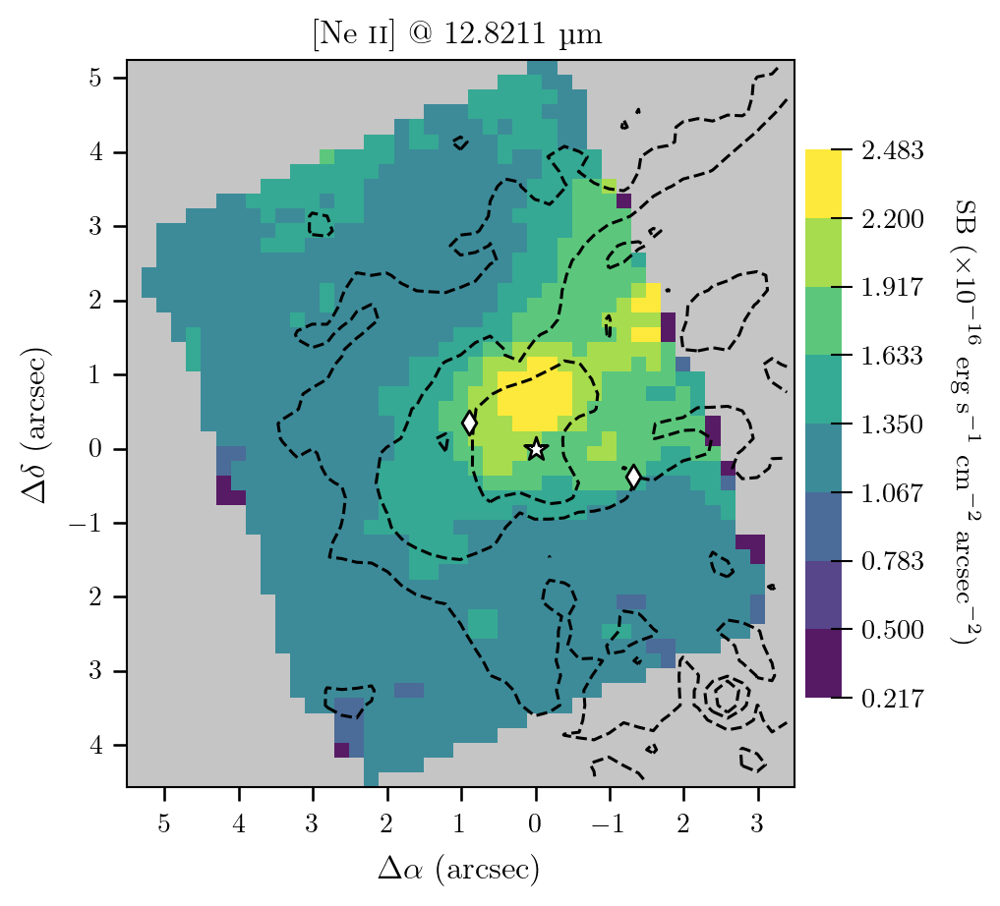
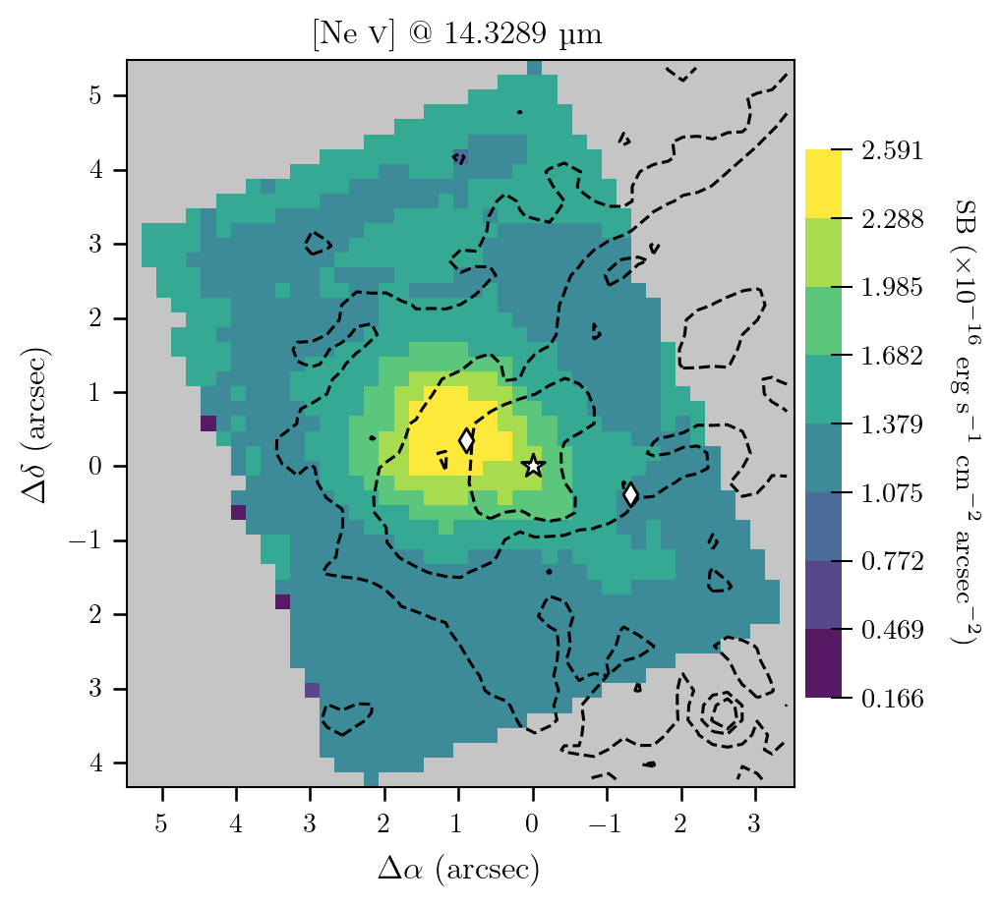
图注：Ho II X-1星云MIRI MRS数据中[Ne II]（电离势约21.6 eV）及[Ne V]（约97.1 eV）的谱线面亮度图。坐标为相对于ULX位置XS（白星）的天球偏移，1角秒约16.5 pc。颜色表示线积分面亮度，单位为 $\mathrm{erg\,s^{-1}\,cm^{-2}\,arcsec^{-2}}$；只显示信噪比至少3的空间像元。黑虚线为经0.25角秒宽高斯滤波平滑的HST/ACS F502N面亮度之95、99和99.7百分位轮廓。菱形标出NE与SW射电结位置。完整11幅图集见在线期刊；此处为本次arXiv提供的代表图。
怎么看这张图：高电离成分的偏移支持各向异性电离；仍需区分辐射方向与气体密度的作用。 支持该篇实际核查的核心证据；已与原HTML图号和完整原文图注核对。
来源与置信度：arXiv HTML；source verified；https://arxiv.org/html/2610.20948v1/Figs/7_FOV_SBimage_12.821um.png；https://arxiv.org/html/2610.20948v1/Figs/8_FOV_SBimage_14.329um.png
图3
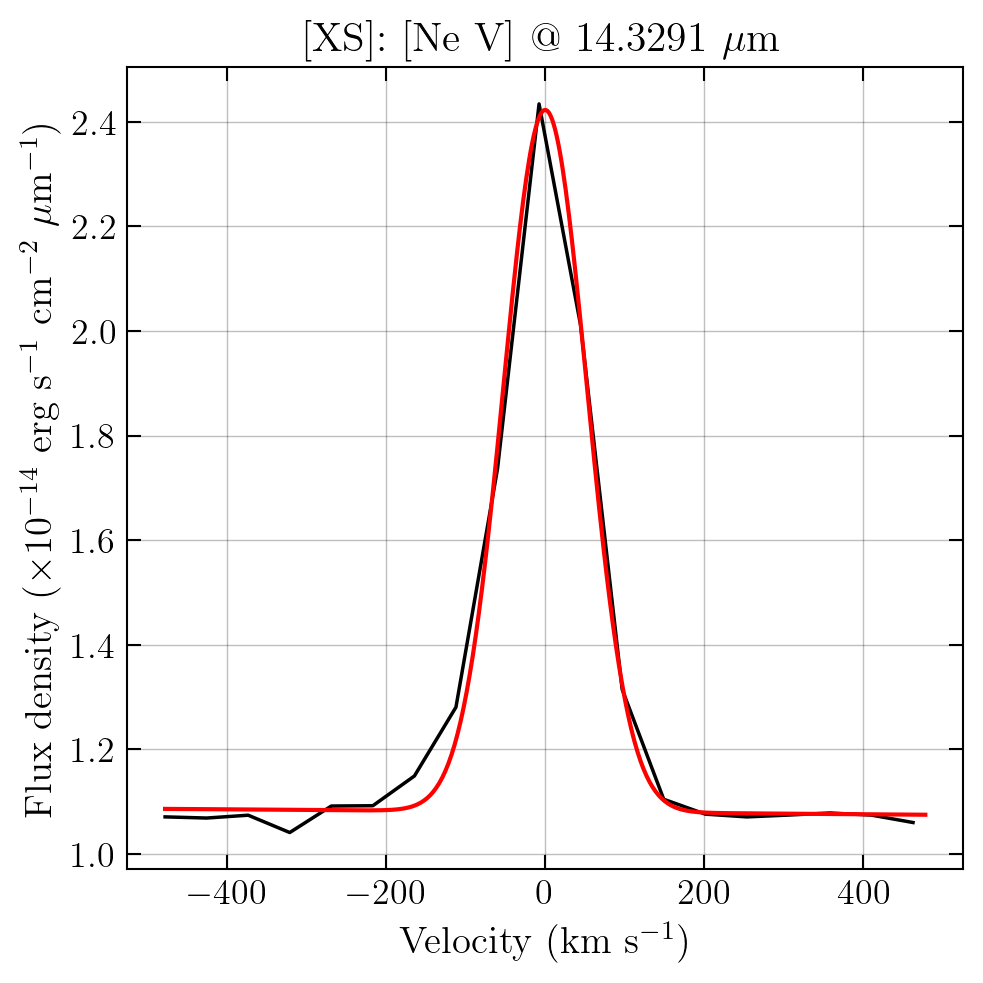
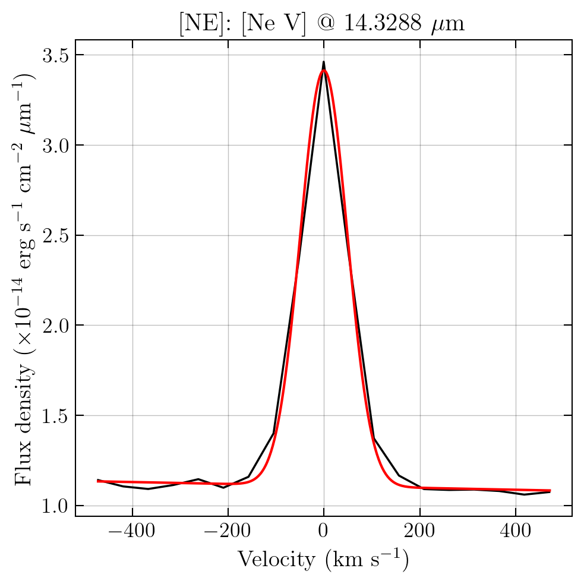
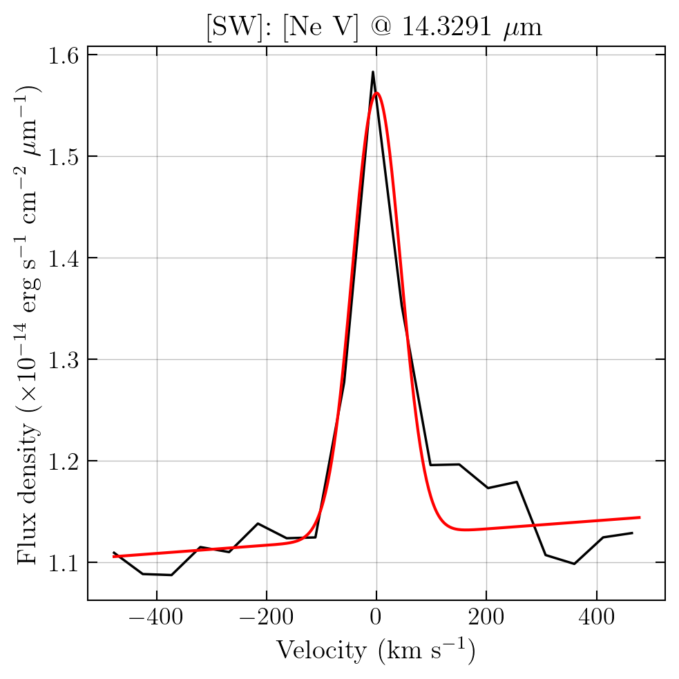
图注：校正Holmberg II星系系统速度后，以速度坐标显示的代表性发射线谱。黑线为从XS（左）、NE（中）、SW（右）提取的约14.33微米[Ne V]观测谱；红线为线性连续谱加高斯线型的最佳拟合。线宽与仪器分辨率相当，在14.3微米附近分辨本领约2770，等效FWHM约110 km/s。数据与模型的残差在SW线翼最明显，可能反映仍残留的条纹和杂散光系统效应。完整13幅图集见在线期刊；此处为arXiv提供的代表面板。
怎么看这张图：没有明显解析的宽线不等于没有运动；SW残差尚不能认定为高速外流。 支持该篇实际核查的核心证据；已与原HTML图号和完整原文图注核对。
来源与置信度：arXiv HTML；source verified；https://arxiv.org/html/2610.20948v1/Figs/cube08_XS_psf_unmix_velpro_14.3291.png；https://arxiv.org/html/2610.20948v1/Figs/cube08_NE_psf_unmix_velpro_14.3288.png；https://arxiv.org/html/2610.20948v1/Figs/cube08_SW_psf_unmix_velpro_14.3291.png
强相关工作
同源的Kaaret等2004年He II成像、Cseh等2014及2015年射电喷出研究，提供了光学电离星云与射电轴基础。新JWST结果把更高电离态的红外线放到相同空间参照中，使跨波段联系更具体。2024年Reyero Serantes等的多波段光谱分析是本文黑洞及B型伴星背景的重要来源；这些推断不应被误写成本次红外线的新动力学测量。
原文引用Allen等2008年的MAPPINGS激波模型，是理解高电离线也可能由激波产生的基础参照。当前窄线与空间排列支持光致电离，但并未系统拟合该模型库。原文还引用2026年对其他贫金属矮星系He III区的多波段研究，说明单个ULX的明确联系并不保证所有类似星系都由X射线双星供能；样本和空间覆盖差异是比较时必须保留的边界。
同一事件 / 同类源线索：
- https://doi.org/10.1111/j.1365-2966.2004.08020.x
- https://doi.org/10.1093/mnrasl/slt166
- https://doi.org/10.1093/mnras/stv1308
- https://doi.org/10.1051/0004-6361/202451324
相似工作：
（未提供）
基础理论 / 方法工作：
相反观点 / 张力线索：
相关简报
1. Neutrino production at the extreme vicinity of supermassive black hole in NGC 1068
- 来源：arXiv / astro-ph.HE
- 链接：https://arxiv.org/abs/2610.21110
- 作者：Zhi-Peng Ma, Kai Wang
- 公告 / 来源日期：2026-10-16
- 阅读层级：相关简报
- 评分：novelty 8/10，importance 7/10，relevance 10/10，final 9.35/10
- 推荐理由：更新IceCube低能谱与级联光子联合限制NGC1068区尺度；重点核查所谓模型无关与sigma定义。 全文III节将同一幂律置信带离散为15点，未给协方差或事件似然校准；覆盖率不是中微子通量比例，半径分位非后验。贡献降为有价值的条件化简报。
中文题目：NGC 1068 中微子产生区：紧凑环境的条件化约束
问题、方法与结论：作者用更新至约0.2 TeV的IceCube谱形，联合强子相互作用与电磁级联计算，扫描NGC 1068核区的半径、磁场、气体密度及质子注入谱。较紧凑的辐射区更容易同时产生中微子并吸收伴随伽马射线；要求模型在更多能量点落入观测置信带时，存活解进一步偏向小半径。约束来自指定光子场、逃逸处方和采样范围，不能称为完全模型无关。
意义与贡献：它把“中微子亮、伽马射线受抑制”的图像落实为可检查的参数组合，并比较随机加速与磁重联的能量、时间尺度条件。随机加速在该处方下更容易满足约束，但作者也承认放宽注入谱等假设后重联仍可能可行。
可借鉴之处：可借鉴的是把中微子产额、级联光子限制和加速供能放进同一计算，再检查逃逸时间及采样收敛。图2能用于辨认半径与所需磁场、质子功率的耦合；存活点的比例和分位数只描述这次采样，不能直接解释为参数后验概率。
局限与关注点：关键统计限制在第三节：作者把同一已拟合幂律置信带离散为15点，用近似独立的对数残差构造卡方，未提供事件似然或点间协方差。因此文中的“约3σ/5σ”不能照搬为经校准的排除显著性。覆盖率是落入置信带的能量网格比例，不是积分中微子通量比例；部分半径统计还进入小于史瓦西半径的区域，须另外核查几何与广义相对论适用性。
图2
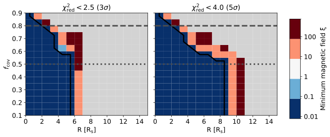
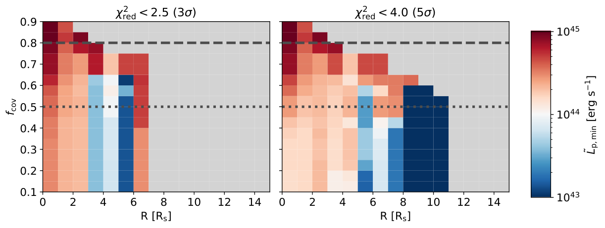
图注：发射半径 $R$ 与覆盖率 $f_{\rm cov}$ 平面中的热图。半径分为1至15个史瓦西半径范围内的15格，覆盖率0至1分为20格。蓝至红的颜色分别表示各格所需的最小磁场（上排）或质子光度中位数（下排）。灰色区域没有存活采样点；上排黑实线近似标出弱场与强场区的分界。
怎么看这张图：覆盖率指能量网格落入拟合置信带的比例；颜色和灰区均以本次采样及筛选条件为前提。 支持该篇实际核查的核心证据；已与原HTML图号和完整原文图注核对。
来源与置信度：arXiv HTML；source verified；https://arxiv.org/html/2610.21110v1/fig_r.svg；https://arxiv.org/html/2610.21110v1/fig_l.png
2. Identification of ultra-high-energy neutrinos in vertical air showers with surface detectors
- 来源：arXiv / astro-ph.HE
- 链接：https://arxiv.org/abs/2610.21495
- 作者：Jaime Alvarez-Muñiz, Ruben Conceição, Pedro J. Costa, David Dias, Mário Pimenta
- 公告 / 来源日期：2026-10-16
- 阅读层级：相关简报
- 评分：novelty 8/10，importance 7/10，relevance 10/10，final 9.35/10
- 推荐理由：垂直簇射打开中微子瞬变定向搜索视场；真实探测器模拟有价值，尚不竞争弥散强背景门槛。
中文题目：地面阵列的垂直簇射中微子通道：一次条件明确的可行性检验
问题、方法与结论：这项模拟探索天顶角小于60度的视场能否参与超高能中微子瞬变搜索。作者用CORSIKA和Geant4模拟水切伦科夫探测器与顶部闪烁体的互补响应，通过电磁和缪子成分的差别区分中性初级粒子与质子背景。在实际计算的1 EeV、30度条件下，背景抑制因子取五万时，探测器信号方案的电子中微子触发加识别效率最高约8%，有效面积约0.016平方千米。
意义与贡献：价值是利用现有两类探测器拓展瞬变告警可见方向。五万的工作点来自一小时、3度窗口的背景预算；弥散搜索需要更严格的排除，不能用这一结果宣称优于成熟的大倾角或掠地通道。
可借鉴之处：方法上把理想粒子成分与可测SSD/WCD信号分开比较，并将效率随相互作用深度积分成有效面积，适合规划定向多信使搜索。图7说明靠近地面发生相互作用不一定有利：簇射还必须有足够发展深度才能触发。
局限与关注点：这是单能量、单天顶角、固定落点的概念验证，使用低于标准Auger阈值的触发和1000米处虚拟密集环取样，尚未包含真实横向分布重建误差。强背景抑制依赖质子判别量尾部指数外推，需更多模拟验证。光子簇射与电子中微子明显重叠，当前选择只能给出中性粒子候选；对缪子中微子几乎没有效率，不能作为全味探测性能。
图7
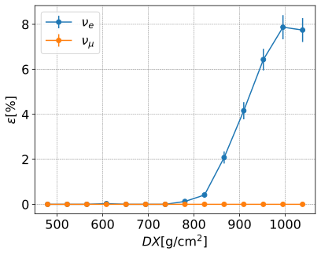
图注：使用闪烁体信号 $S_{\rm SSD}$ 与水切伦科夫信号 $S_{\rm WCD}$ 作判别量时，电子中微子（蓝）和缪子中微子（橙）的识别效率 $\varepsilon_\nu$（包含事件触发和标记）随相互作用点至地面的倾斜大气深度 $DX$ 变化。事件能量为 $10^{18}$ eV，天顶角为30度，背景抑制因子为 $5\times10^4$。
怎么看这张图：这是一组单能量单角度模拟；电子中微子最高约8%，缪子中微子在此选择下近乎为零。 支持该篇实际核查的核心证据；已与原HTML图号和完整原文图注核对。
来源与置信度：arXiv HTML；source verified；https://arxiv.org/html/2610.21495v1/Full_Efficiency_All_Neutrinos_EvtSSD_RingSig_Vs_EvtWCD_RingSig_Threshold_2e-05.svg
3. A model for the image structure and spectral energy distribution of relativistic jets
- 来源：arXiv / astro-ph.HE
- 链接：https://arxiv.org/abs/2610.20961
- 作者：Dominic W. Pesce, Ramesh Narayan, Yuh Tsunetoe
- 公告 / 来源日期：2026-10-16
- 阅读层级：相关简报
- 评分：novelty 7/10，importance 8/10，relevance 9/10，final 9.05/10
- 推荐理由：同一喷流模型联合图像与SED、冷却和俯仰角各向异性，适合跨波段比较；Sgr A喷流仅相容。
中文题目：把喷流图像与宽带能谱放在同一半解析模型中
问题、方法与结论：作者实现轴对称无力场喷流的Python模型，加入连续非热电子加热、同步辐射冷却、俯仰角各向异性与直线光线输运，联合预测图像和频谱。M87的45个射电至X射线测量可由11参数谱拟合达到卡方33.5；代表参数同时近似再现多频VLBI形态和沿喷流亮度下降。Sgr A*也存在与静默谱及射电尺寸标度相容的准直喷流解。
意义与贡献：它把不同波段所包含的空间尺度显式纳入比较，避免将大孔径通量全部归给黑洞附近。贡献主要是已有喷流处方的实现、参数标度探索和跨尺度检验；Sgr A*结果证明模型可行，尚不是喷流发现。
可借鉴之处：可借鉴图6的尺度匹配：按各观测覆盖半径积分喷流，并加入相同质量、吸积率下的平流主导吸积流。宽带谱与空间分辨信息一起使用，能够排除仅凭总通量难识别的退化；公开实现适合快速扫描，原文给出积分通量随网格加密的收敛检查。
局限与关注点：当前实现不含引力弯光、偏振或逆康普顿，采用稳态且电子加热是处方而非自洽输运。Sgr A*固定五个弱约束参数来考察准直解；全参数自由时会偏向近球形外流。其代表解的紧凑X射线占比还可能超过变源约束，可调低电子最高能量缓解。非热吸积流同样可解释射电超额，尚需真正的成像区分。
图6
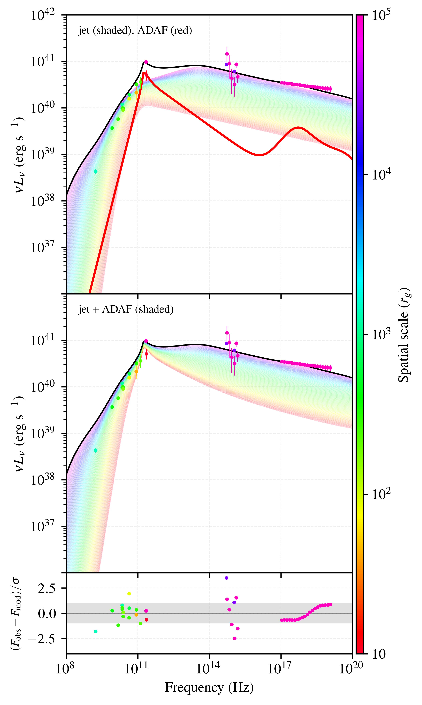
图注：M87*的模型能谱能量分布。上：彩色带为喷流在从 $r\leq10r_g$（红）到 $r\leq10^5r_g$（品红）的不同空间积分尺度下的预测；红曲线为Pesce等所述ADAF模型，采用与喷流相同的黑洞质量和吸积率，黑曲线为ADAF与喷流之和。中：与上图相同，但移去单独的红色ADAF曲线，彩色带改为每个尺度内喷流和ADAF的合成发射。两幅上图叠加的实际测量来自EHT多波段科学工作组，颜色也标明各自探测的空间尺度。下：代表模型的归一化残差 $(F_{\rm obs}-F_{\rm mod})/\sigma$，灰带为正负一个标准差。
怎么看这张图：彩色带是空间积分尺度变化，不是模型置信区间；应在匹配孔径后比较各波段。 支持该篇实际核查的核心证据；已与原HTML图号和完整原文图注核对。
来源与置信度：arXiv HTML；source verified；https://arxiv.org/html/2610.20961v1/SED_M87_with_ADAF_Lnu.png
4. Secular Evolution of Quasiperiodic Eruptions: eRO-QPE2
- 来源：arXiv / astro-ph.HE
- 链接：https://arxiv.org/abs/2610.21844
- 作者：Zirui Zhang, Cong Zhou, Zhen Pan
- 公告 / 来源日期：2026-10-16
- 阅读层级：相关简报
- 评分：novelty 7/10，importance 8/10，relevance 9/10，final 9.05/10
- 推荐理由：4.33年11次观测约束eRO-QPE2长期计时和次级爆发，EMRI解释需保持模型条件。
中文题目：eRO-QPE2 四年计时：一轨两次爆发与低偏心率的条件化证据
问题、方法与结论：作者重分析2020—2024年11次XMM-Newton观测，覆盖4.33年，发现0.2–2 keV正常爆发峰值计数率相对稳定，而静默成分总体下降并有明显偏离线性趋势。叠加相邻爆发间隙未检出次级爆发，其总计数相对正常爆发的95%上限为0.56%。在每轨两次穿盘、吸积盘进动的极端质量比系统模型下，两段计时拟合分别得到偏心率小于0.026和0.033。
意义与贡献：较强的新增证据是对遗漏次级爆发的限制，结合恒星潮汐生存条件，使“一轨只看见一次穿盘”解释更难成立。长期复发间隔变化约为每秒减少五百万分之一秒，但不能直接当作已经识别的引力波驱动内旋。
可借鉴之处：值得借鉴的是分开分析静默通量、爆发强度与奇偶间隔，并将几何光程延迟、盘厚和轨道进动放入计时模型。观测间隙的未知圈数被边缘化，爆发起点与峰值的形态差异通过额外计时散布处理，避免把所有长短间隔都归因于偏心率。
局限与关注点：低偏心率是指定EMRI加盘模型的贝叶斯可信上限；黑洞质量、轨道尺度及盘参数仍较弱约束。两段拟合共享第4个历元，不能当作完全独立重复。次级信号限制针对叠加方法及假定形状，计数比与模拟的辐射能量比也不完全同义。静默变化支持进动的可能性，尚非盘进动的唯一证明。
图2
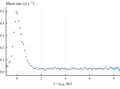
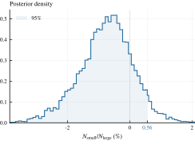
图注：上：全部11个XMM观测历元叠加后的爆发—静默信号。下：对叠加信号作贝叶斯分析得到的 $N_{\rm small}/N_{\rm large}$ 后验密度，其中两者分别是假设次级爆发与正常爆发的总计数。
怎么看这张图：上限针对假定形状的叠加次级信号；计数比不是直接的总辐射能量比。 支持该篇实际核查的核心证据；已与原HTML图号和完整原文图注核对。
来源与置信度：arXiv HTML；source verified；https://arxiv.org/html/2610.21844v1/fig02-stacked-light-curve.svg；https://arxiv.org/html/2610.21844v1/fig03-secondary-count-ratio.svg
5. A Shell Collision Scenario for EP251222b/GRB 251222A: Connecting Prompt Emission and Double-Peaked Afterglow
- 来源：arXiv / astro-ph.HE
- 链接：https://arxiv.org/abs/2610.21583
- 作者：Run Shi, Di Xiao, Brajesh Kumar, Yifang Liang, Guowang Du, Jinjun Geng, Wenlong Zhang, Yuan Fang
- 公告 / 来源日期：2026-10-16
- 阅读层级：相关简报
- 评分：novelty 7/10，importance 7/10，relevance 9/10，final 8.70/10
- 推荐理由：EP与GBM脉冲及双峰余辉的壳碰撞关联可检验，选脉冲与并合映射是关键条件，非唯一机制。
中文题目：EP251222b 的双峰余辉：用时序和能量预算检验壳层碰撞
问题、方法与结论：EP251222b/GRB 251222A位于红移3.171，EP软X射线、Fermi瞬时谱及光学近红外余辉呈现多段活动与两次宽峰。作者将较晚软X射线耀发关联于快窄壳追上慢宽壳，再以合并核心和外侧环翼的前向激波拟合余辉。14参数拟合可再现双峰，但核心—环翼结构是有效参数化，没有由多维流体计算推导。
意义与贡献：本文把瞬时发射的壳层时序、质量守恒映射与余辉能量连接起来，给出比单独拟合双峰更具体的自洽性检验。逐个联合后验样本计算得到耗散能约一乘十的52次方erg量级，耗散效率中位数0.37%；这与0.5–4 keV波段定义的全局辐射效率约0.06%–0.09%是不同量。
可借鉴之处：可借鉴逐样本检验守恒、将碰撞前光学点仅作前向激波上限，以及明确不同仪器时间零点。作者还改变壳层时间映射和首峰约束宽度作敏感性检查；图7的实线是一个最大后验样本，不能当作后验预测区间。
局限与关注点：两个物理壳层、耀发对应碰撞、碰撞前尚未减速均是模型条件。较晚谱硬化约2.7σ仅具提示性；第二壳洛伦兹因子、核心磁能份额和外翼角度仍受先验影响。特定高斯结构喷流的较差信息准则不等于排除了全部替代模型。X射线观测空档、首峰稀疏及缺少晚期折断，使均匀介质、反向激波等选择仍不唯一。
图7
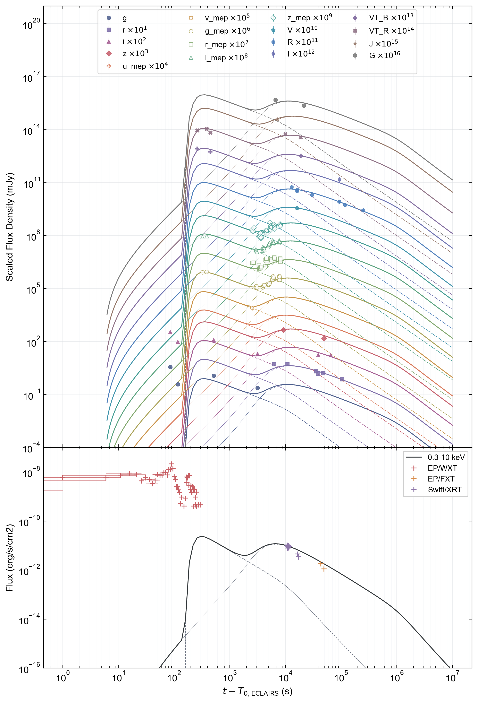
图注：光学、近红外和X射线余辉的最佳拟合。虚线、点线分别表示内外成分，实线为两者之和；曲线对应联合样本中对数概率最大的一个样本。光学近红外数据与曲线按图例依次乘以十的幂作纵向平移。碰撞前四个光学测量以其测量误差绘出，但在似然中作为前向激波贡献的单侧上限。EP/WXT瞬时数据只作背景参照。时间相对17:05:46 UTC的ECLAIRS零点，较GBM触发早5.27秒；碰撞时刻及峰时似然换算到第III节定义的GBM参照。
怎么看这张图：曲线不是后验预测带，竖向平移也不是实际跨波段亮度比；早期数据不能全部归给前向激波。 支持该篇实际核查的核心证据；已与原HTML图号和完整原文图注核对。
来源与置信度：arXiv HTML；source verified；https://arxiv.org/html/2610.21583v1/fit.png
6. Convective Oscillations of Cosmic Rays
- 来源：arXiv / astro-ph.HE
- 链接：https://arxiv.org/abs/2610.21863
- 作者：Yiran Zhang, Siming Liu
- 公告 / 来源日期：2026-10-16
- 阅读层级：相关简报
- 评分：novelty 7/10，importance 7/10，relevance 9/10，final 8.70/10
- 推荐理由：对流造成宇宙线涨落谱的尺度渐近关系可用于伽马晕形态，需区分预测与观测检出。
中文题目：宇宙线对流涨落能否从伽马射线晕的空间功率谱读出？
问题、方法与结论：作者从含扩散、对流及辐射损失的输运方程出发，在线性扰动近似下推导宇宙线密度涨落。假定平均粒子分布为球对称高斯、对流统计均匀各向同性，可区分不可压缩与声学扰动：大尺度功率分别随波数四次方、二次方增长，小尺度则由速度谱斜率再减4或减2决定。对类Geminga源计算逆康普顿辐射后，三维辐射谱保留相应渐近标度。
意义与贡献：它提供了把未来TeV晕的小尺度不规则形态与周围湍流联系起来的理论路线，不必把每个不对称结构都解释为扩散系数异常。结果是预测，本文没有从观测图像测出湍流谱，也没有证明现有晕结构由该机制主导。
可借鉴之处：对IACT或广延阵列形态分析，可借鉴先减去平均晕、再分析残差的空间统计。但真正观测的是二维面亮度：本文投影切片近似给出的环积分二维功率，相对三维壳积分功率还要少一个波数因子，不能直接比较两种谱斜率。
局限与关注点：高斯分布对爆发点源有明确基础，对持续注入脉冲星只是近似，尤其过渡尺度处不可靠。模型忽略各向异性扩散和各向异性对流，损失率也作简化；辐射计算才保留Klein–Nishina效应。应用于实际图像还需处理PSF、曝光、背景及有限视场，本文未进行这些前向模拟和数据拟合。
图4
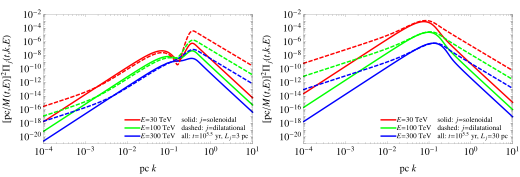
图注：类Geminga源周围伽马射线晕的涨落功率谱。
怎么看这张图：原文图注仅此一句。正文IV说明为CMB逆康普顿计算、年龄约31.6万年；这是三维辐射壳积分功率，二维面亮度功率还涉及投影后的波数因子。 支持该篇实际核查的核心证据；已与原HTML图号和完整原文图注核对。
来源与置信度：arXiv HTML；source verified；https://arxiv.org/html/2610.21863v1/f4.svg
7. Compact Dark Matter with Globular Cluster Pulsars
- 来源：arXiv / astro-ph.HE
- 链接：https://arxiv.org/abs/2610.20732
- 作者：Soobeom Chung, Jeff A. Dror
- 公告 / 来源日期：2026-10-16
- 阅读层级：相关简报
- 评分：novelty 7/10，importance 7/10，relevance 8/10，final 8.35/10
- 推荐理由：球状星团多脉冲星共模消除与Shapiro暗物质搜索结合有用，但40年SKA预测依赖噪声和前景假设。
中文题目：球状星团脉冲星搜索致密暗物质：计时拟合与恒星前景决定边界
问题、方法与结论：研究预测用Terzan 5多颗脉冲星的Shapiro时延搜寻沿视线经过的致密暗物质。大暗物质柱密度和同波束多源计时提供事件率优势，但拟合自转高阶导数会吸收缓慢信号。作者将时延投影到计时多项式的正交部分，再计算可检测轨迹面积和零事件的90%排除能力；这是一项未来灵敏度预测，没有报告暗物质事件或新观测上限。
意义与贡献：在40年、每周4小时、白噪声的设定下，当前精度最佳仍只能达到不物理的暗物质份额约8；假设SKA-Mid计时改善六倍且有100颗脉冲星，可到约0.7，200颗与更乐观SKA2灵敏度可到约0.06。它显示高柱密度不能自动弥补当前计时噪声。
可借鉴之处：可复用之处是同时计算计时模型吸收、视线横向速度和致密重子前景。普通恒星与暗物质的同质量同轨迹时延相同；星团恒星虽柱密度高，和脉冲星共同运动却降低穿越率。图1把此限制与仪器情景一并展示。
局限与关注点：四十年均匀采样与精度保持是理想化，额外脉冲星数量及SKA2灵敏度属于假设。红噪声、色散变化、双星和星团特有低频结构需要真实联合拟合。共同引力波背景可用近邻相关性抑制，并不消除各源独有噪声。致密重子“地板”是事件率等效前景，尚非不可突破的严格极限。
图1
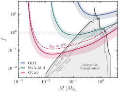
图注：朝Terzan 5开展单事件Shapiro时延搜索时，致密天体暗物质份额 $f$ 的预测上限。各方案持续40年，每周一次4小时观测，约每年210小时。蓝色GBT方案采用当前能力：16颗已有公开残差的脉冲星以该残差作单次4小时误差，其余33颗从10至30微秒均匀取样。绿色SKA-Mid方案将残差除以6并假设100颗；红色SKA2方案除以36并假设200颗，红虚线为同样SKA2精度但仅100颗的方案。绿红两组中超出已知49颗的脉冲星，从已知残差分布抽样。各带下缘为只拟合到自转频率一阶导数，上缘为全部拟合到三阶导数；实线采用Terzan 5实际混合比例，其中36颗中13颗需要三阶导数。假定白计时噪声。阴影为低于致密重子前景的区域，细灰线分别示星团与银河系贡献，虚线标出 $f=1$。
怎么看这张图：这是长期观测情景预测；色带不是已取得的暗物质限制或单纯统计误差。 支持该篇实际核查的核心证据；已与原HTML图号和完整原文图注核对。
来源与置信度：arXiv HTML；source verified；https://arxiv.org/html/2610.20732v1/terzan5_scenarios.svg
8. FUGUE: A New GPU-accelerated General Relativistic Magnetohydrodynamics Code with Weak-Field Multipole Self-Gravity and Quasi-Stationary Kerr Black Hole Evolution
- 来源：arXiv / astro-ph.HE
- 链接：https://arxiv.org/abs/2610.20869
- 作者：Piotr Plonka, Agnieszka Janiuk
- 公告 / 来源日期：2026-10-16
- 阅读层级：相关简报
- 评分：novelty 7/10，importance 7/10，relevance 8/10，final 8.35/10
- 推荐理由：GPU GRMHD加入弱场多极自引力和准稳态黑洞演化有实用增量，非完整动力学时空。
中文题目：FUGUE：在快速GRMHD中加入弱场多极自引力
问题、方法与结论：FUGUE将GPU广义相对论磁流体求解器、准静态Kerr黑洞质量自旋更新和多极Poisson自引力结合。黑洞背景仍保持Kerr形状，自引力通过附加四力作用于流体。作者完成激波、磁场输运、Bondi吸积、磁化环面和自引力测试，多极势与梯度随网格加密接近二阶收敛；演示盘模型中，自引力可放大非轴对称结构和间歇吸积。
意义与贡献：价值在于以较低计算成本研究周围物质势较弱、却能影响盘整体演化的系统。单GH200在PLM配置下超过每秒4.7亿单元完整时间步；含16阶多极自引力的PPM配置约1.56亿。两者重建方法不同，不能把比值单独归因于自引力开销。
可借鉴之处：图11把数值收敛与缺失物理区分开：只留单极时，对非球对称势加密也不会收敛。GRMHD基准比较、自引力静水平衡与能量交换分别检查不同模块，适合评估代码是否能用于坍缩星或大质量盘的长期演化。
局限与关注点：它没有求解完整动力学时空，也没有当前版本的核物态或中微子输运。平直空间Poisson算子、瞬时势和四力处方需在相应弱场范围使用。演示薄盘没有冷却，多极截断和垂向分辨率不足以证明局部碎裂或充分解析MRI；不能由吸积变化直接声称预测了GRB光变或引力波。
图11
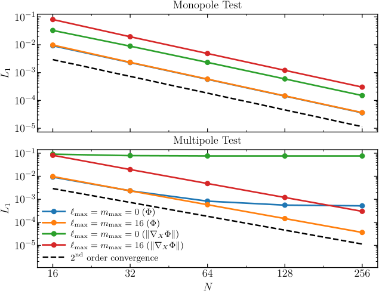
图注：自引力Poisson求解器的收敛检验，显示引力势 $\Phi$ 及其梯度范数的相对 $L_1$ 误差。上图单极测试中，单极与多极两种配置均表现为二阶收敛；下图多极测试中，多极求解器收敛，而单极求解器不能完整再现非球对称场。虚线表示二阶收敛标度。
怎么看这张图：离散收敛验证的是所实现的弱场方程，不等于证明其完整再现动力学时空。 支持该篇实际核查的核心证据；已与原HTML图号和完整原文图注核对。
来源与置信度：arXiv HTML；source verified；https://arxiv.org/html/2610.20869v1/Multi_SG_Convergence.png
9. Detecting and Identifying Supernovae in AGN Accretion Disks
- 来源：arXiv / astro-ph.HE
- 链接：https://arxiv.org/abs/2610.21104
- 作者：Zhi-Peng Ma, Kai Wang
- 公告 / 来源日期：2026-10-16
- 阅读层级：相关简报
- 评分：novelty 7/10，importance 7/10，relevance 8/10，final 8.35/10
- 推荐理由：AGN盘超新星可见性及与CSM退化的定量预测有用，单区解析模型需核查。
中文题目：AGN盘内超新星：看得见与能认出是两道不同门槛
问题、方法与结论：作者把AGN盘结构、超新星抛射物激波和单区辐射演化连接，扫描四类前身星、黑洞质量、爱丁顿比及爆炸半径。较低黑洞质量或较低AGN亮度通常有利于瞬变超过背景。但它们与普通星周物质相互作用超新星会重叠，作者进一步以峰值光度、峰值温度和衰减时间的三维空间距离，寻找不能被其参考网格再现的区域。
意义与贡献：文章有用之处是把“瞬变比AGN亮”与“可证明来自盘内”分开。模型中百万太阳质量黑洞的候选特征偏向50–90 eV、约一天的极紫外活动；一亿太阳质量情景转向数eV、数十天，观测波段和响应节奏明显不同。这些是条件化模型预测，尚未识别实际盘内超新星。
可借鉴之处：同一辐射处方计算盘环境和孤立星周环境，能减少比较中的算法差异。图5同时展示亮度、可见时间与模型退化区域，适合设计联合紫外、光学随访；谱线及环境化学信息可能提供三项宽带统计量之外的识别力。
局限与关注点：模型采用指定SG盘、近似球对称激波和单区辐射，黑体形状在光子不足时尤其有限。所谓95%/99%界只是有限模型网格、每维0.1 dex容差下的距离阈值，不是经校准的来源置信度。可见时间只要求超过AGN背景，没有完整巡天选择函数；极紫外吸收、AGN变源及其他星周结构都可能削弱实际识别能力。
图5
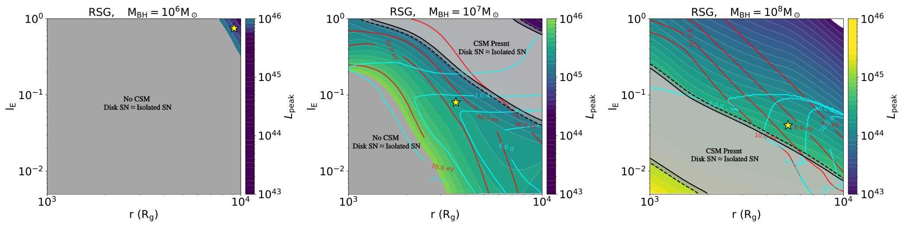
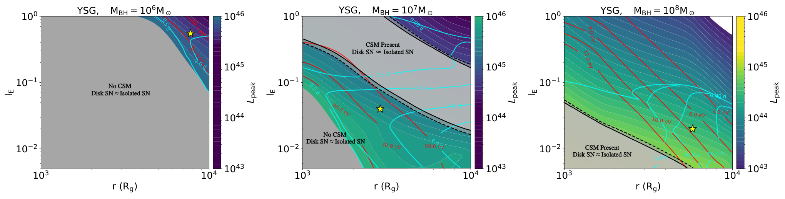
图注：红超巨星与黄超巨星前身的盘内超新星，在爆炸半径 $r$ 与爱丁顿比 $l_E$ 参数平面上的峰值光度等值图。红色等值线表示峰值时的辐射温度，青色表示可见时间，即相应峰温波段的超新星发射超过AGN背景的持续时间。实线、虚线边界围成的灰区分别表示在名义95%与99%阈值下不能与孤立星周物质相互作用超新星区分的模型；与无星周物质孤立超新星不可区分的区域也标灰并注明。黄星标出一个可与孤立参考网格区分的代表盘内模型。
怎么看这张图：“95%/99%”是有限模型网格距离阈值，正文明确不作为正式来源置信度；可见性也尚未包含巡天选择。 支持该篇实际核查的核心证据；已与原HTML图号和完整原文图注核对。
来源与置信度：arXiv HTML；source verified；https://arxiv.org/html/2610.21104v1/fig_RSG.png；https://arxiv.org/html/2610.21104v1/fig_YSG.png
10. Wandering intermediate-mass black holes and off-nuclear tidal disruption events from early star clusters
- 来源：arXiv / astro-ph.HE
- 链接：https://arxiv.org/abs/2610.20719
- 作者：Claire E. Williams, Smadar Naoz, Yihao Zhou, Tatsuya Akiba-Lewis, Mark Vogelsberger, Blakesley Burkhart, Naoki Yoshida, Avi Chen
- 公告 / 来源日期：2026-10-16
- 阅读层级：相关简报
- 评分：novelty 7/10，importance 7/10，relevance 8/10，final 8.35/10
- 推荐理由：早期星团IMBH游荡及偏核TDE率连接有用，但15个星系与最大/保守形成模型限制普适性。
中文题目：早期星团中的游荡中等质量黑洞与核外潮汐瓦解事件
问题、方法与结论：作者沿15个TNG50椭圆星系的并合树放置早期星团，以失控恒星碰撞形成中等质量黑洞，结合动力摩擦轨道和损失锥供给计算核外潮汐瓦解事件。无恒星反馈的高分辨率模拟与经验星团关系构成两套初始种群。结果中的事件主要发生于黑洞形成后约10–100 Myr，反映其有限恒星库被耗尽的过程。
意义与贡献：该工作把黑洞种子形成、星团位置和可观察瞬变连接起来。两套种群给出的事件率峰值可相差约一至两个数量级，提示事件率同时依赖星团数目、紧致度和形成历史，尚不能只用一个观测率反推出早期星团密度。
可借鉴之处：重要的方法约束是逐壳层限制瓦解总数不超过可用恒星，并记录星团与不断并合的宿主之间的真实相对位置。高红移时大量“核外”事件在主支约百千秒差距处、属于尚未并入的低质量晕；观测上更可能看似无宿主或位于暗弱邻居，而非已分辨星系内的偏核源。
局限与关注点：最大种群不含反馈且用了增强小尺度结构的初始条件，经验方案也把本地幸存球状星团关系外推到早期低质量晕。模型未自洽演化潮汐失质量、损失锥补给、黑洞反冲及后续吸积。正文对峰值和晚期下降红移有口径差异，因此这里只保留量级和趋势；红移时间膨胀、辐射机制及巡天选择仍须计算，不能当作探测率预测。
图3
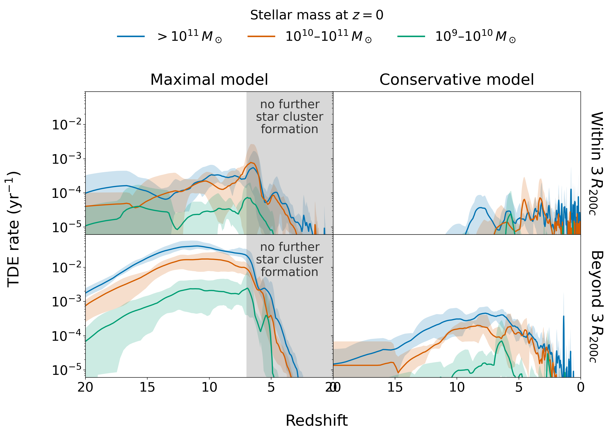
图注：样本中平均每星系核外潮汐瓦解事件率随红移变化，经100 Myr平滑。左为最大星团模型，右为保守模型；不同颜色对应Illustris TNG50宿主在红移零时的恒星质量分组。上排是发生于宿主三个 $R_{200c}$ 内的事件，下排是更远事件；阴影表示每个质量组五个星系之间的离散范围。
怎么看这张图：这是源参考系的模型事件率及并合历史离散，不是巡天探测率；高红移核外可指暗弱独立邻晕。 支持该篇实际核查的核心证据；已与原HTML图号和完整原文图注核对。
来源与置信度：arXiv HTML；source verified；https://arxiv.org/html/2610.20719v1/tde_rate_smoothed_quad_alpha1.2_100Myr_jit0.1_lcfullU_vs_obs_bf20_seed_gclf_marks_kroupa12_analytic_hostown_boost1.0_lcfullU_evdist3R200.png
11. X-ray point sources towards the giant radio lobes of Centaurus A
- 来源：arXiv / astro-ph.HE
- 链接：https://arxiv.org/abs/2610.22168
- 作者：Karthik Balasubramaniam, Hsiang-Kuang Chang, Łukasz Stawarz, Volodymyr Marchenko
- 公告 / 来源日期：2026-10-16
- 阅读层级：相关简报
- 评分：novelty 6/10，importance 7/10，relevance 8/10，final 8.05/10
- 推荐理由：CenA叶区185源目录及选择函数控制的无超额上限可改善弥散测量，属于扎实有限增量。
中文题目：半人马座A巨瓣前的X射线点源：未见显著额外种群
问题、方法与结论：研究重处理2013年五个Chandra/ACIS-I巨射电瓣视场，建立185个经测光核验的点源目录，并在共同能段、流量尺度和选择函数下比较宇宙X射线背景。报告阈值以上83个良好源含9颗前景星，余下74个AGN候选低于预计约101个；加入15%背景归一化不确定性后，差异约为负1.5σ，没有显著过量。
意义与贡献：它为巨瓣弥散X射线和逆康普顿研究提供了点源清理基线。取保守30%背景归一化误差，观测覆盖区域内巨瓣相关的可检测额外源数90%上限为38；这是选择条件下的数量上限，不是整片巨瓣所有紧致天体的普查。
可借鉴之处：低计数硬度比采用源与背景Poisson分布联合边缘化，避免净计数负值产生非物理比值。作者还统一前景吸收导致的通量换算，并把质量切选纳入完备度加权面积。图5可看出原始计数与完备度修正的差别。
局限与关注点：解析Poisson阈值只是实际小波检源的近似，尚需在真实图像中注入并重检源来标定。当前计数偏低使上限更紧，其可靠性依赖背景模型；不同系统误差可把上限从8改变到38。不能把投影点源放在3.8 Mpc所得等效光度当作已知源光度，也不能由数量界直接给出磁场偏差或恒星形成率上限。
图5
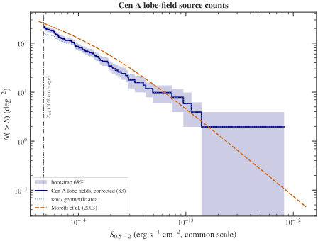
图注：半人马座A巨瓣视场经完备度修正的0.5–2 keV累积源计数 $N(>S)$，单位每平方度，深蓝色表示修正结果；阴影为按 $1/\Omega$ 加权点的68%自助重采样区间。点线表示未修正、仅按几何面积计算的计数，红虚线为Moretti等2003年的河外背景。竖直点划线为报告阈值 $S_{\rm ref}$，对应选择函数覆盖半个视场面积时的通量。所有通量已换到3.5节的共同尺度。
怎么看这张图：未出现超过背景的明显过量；阴影不包括全部选择函数和背景归一化系统误差。 支持该篇实际核查的核心证据；已与原HTML图号和完整原文图注核对。
来源与置信度：arXiv HTML；source verified；https://arxiv.org/html/2610.22168v1/cena_lognlogs.svg
12. Extracting the Central Sound Speed of Neutron Stars through Intrinsic Stellar Structure Scaling with Reduced Equation-of-State Model Dependence
- 来源：arXiv / astro-ph.HE
- 链接：https://arxiv.org/abs/2610.21806
- 作者：Jian-Hao Shi, Bao-Jun Cai, Yu-Gang Ma
- 公告 / 来源日期：2026-10-16
- 阅读层级：相关简报
- 评分：novelty 7/10，importance 7/10，relevance 7/10，final 8.00/10
- 推荐理由：EOS家族共同标度降低模型依赖有增量，但并非独立观测得到中心声速。
中文题目：中子星中心声速的共同标度：减少物态模型依赖的尝试
问题、方法与结论：作者改变相对论平均场模型的ω介子自相互作用，构造六族、共6000条符合指定核物理范围、最大质量和潮汐形变筛选的物态方程。再从无量纲TOV恒星结构的中心展开建立声速平方估计量，拟合它与数值解的关系。对1.4太阳质量中子星，各族线性关系的决定系数约0.94–0.99，共同交汇区域给出声速平方约为光速平方的一半。
意义与贡献：物理贡献是展示不同高密度渐近行为仍可出现相似中心标度，并说明非单调声速也可能由纯核子相互作用产生。声速峰本身因而不能自动作为新自由度或相变的独有证据。这里没有新增观测数据，也没有直接测量中子星内部声速。
可借鉴之处：方法上将同一筛选条件应用到不同模型族，再用族间差异衡量残余模型依赖。六族共同解约0.523，排除最硬的一族后约0.496；图11把数值样本、合并拟合和共同解分开，便于检查“标度准确”与“共同解有物理代表性”这两个问题。
局限与关注点：共同解来自各族等权关系离散度最小化，不是观测后验均值，也未必落在样本最密集区域；换算中心压强比还使用先前分析的质量响应参数。所有模型仍属有限RMF家族，中心展开向星体整体延伸有近似误差。相变、其他微观物态和更大质量尚需独立检验，不能把约0.5宣传成完全模型无关的观测结论。
图11
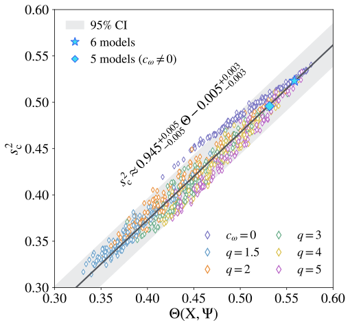
图注：典型1.4太阳质量中子星的中心声速平方 $s_c^2$ 与解析估计量 $\Theta(X,\Psi)$ 的关系。空心符号是从六个相对论平均场模型族中各随机选出的150个结构；黑实线为合并全部样本的线性拟合，灰带表示95%置信区间，拟合关系列于图内。实心星和菱形标出共同估计值。
怎么看这张图：共同估计来自模型族关系的最小离散，不是观测后验最高密度点；相关性高仍不消除模型族限制。 支持该篇实际核查的核心证据；已与原HTML图号和完整原文图注核对。
来源与置信度：arXiv HTML；source verified；https://arxiv.org/html/2610.21806v1/SSS.svg
说明
评分由 LLM 给出初评，再由本地阈值策略过滤；IACT、TeV 伽马射线和高能中微子天文学按重点方向处理。